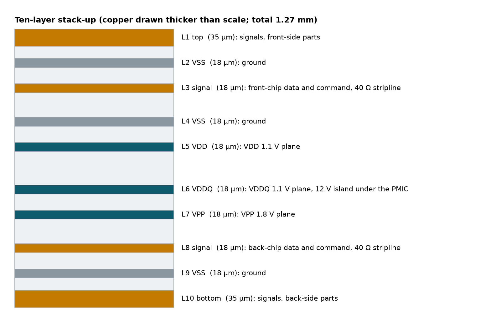
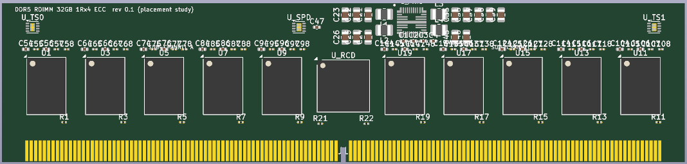
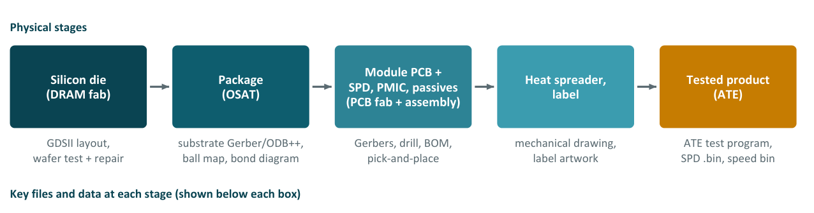

Chapter 14: The Board, the SPD and Making a Module¶
A printed circuit board is a sandwich of copper and fibreglass. This chapter finishes the case study of the 32 GB module by showing how the sandwich is chosen, where the parts go, how they are wired, how the identity chip is programmed and protected with a checksum, how the result is tested and how the factory files are produced. It then widens the view to the module as a product: how a die becomes a boxed module, what a company needs to build a DDR5 module commercially, and what that costs in parts, people, money and time.
14.1 The stack-up¶
The board has ten copper layers, each with a job. Signal layers carry the fast wires. Each sits next to a solid plane layer, which gives every signal a clean return path and sets its impedance. Plane layers are whole sheets of copper for ground (VSS) and for each supply (VDD, VDDQ, VPP). A through-hole "via" from a chip ball reaches the plane of its own voltage.

The total thickness is 1.27 mm, as for every memory stick. Trace widths come from the impedance formula: a width of 0.151 mm gives 40 Ω on the inner layers. The VDDQ plane (L6) also carries a 12 V island under the PMIC.
14.2 Placement and routing¶
Where parts go decides whether the wiring is even possible. Figure 14.2 shows the placement study of the board rendered by KiCad: twenty DRAMs in two rows of ten (the back-side chips lie under the front ones), the RCD in the middle, the SPD hub and the temperature sensors, and the gold fingers along the bottom. Traces are not routed in this render.

Three lessons came out of the placement work.
- Keep-out space. Every part has a "courtyard" that others may not enter. The real package's courtyard pushed the chip spacing from 11.0 mm to 11.5 mm.
- Follow the vendor. The PMIC data sheet includes a recommended layout. The first placement had the coils on the wrong side, and was redone to match.
- The via puzzle. Front and back chips sit on top of each other and share the same holes between the balls. About 140 connections need vias, but only about 112 spots exist. This is solved as an optimisation problem, which the course proposes as a capstone project (Exercise 17.5, option (a), as an integer program).
14.3 The SPD: the identity card¶
When a computer starts, before it can use the memory, it reads 1024 bytes from the module's SPD (Serial Presence Detect) chip: the chip type, size, speed, timings, manufacturer and serial number. The project generates this file from the design code and protects it with a CRC checksum, a fingerprint of bytes 0 to 509 stored in bytes 510 and 511. The tests flip every one of the 4080 bits (\(510 \times 8\)) once and confirm that the checksum catches each flip.
| Byte(s) | Holds | Our value |
|---|---|---|
| 2 | Memory type | 0x12 = DDR5 |
| 3 | Module type | RDIMM |
| 4–7 | Chip density and organisation | 16 Gb, x4, 8 bank groups |
| 20–47 | Timings in picoseconds | CL 40, tRCD 39, tRP 39 … |
| 510–511 | CRC-16 checksum | verified |
| 512+ | Maker, date, part number, serial | placeholders |
What is still open
77 of the 86 fields still need checking against the JEDEC standard before a real chip is programmed. The SPD contents of the project are a design-stage file, not a certified one.
The checksum is CRC-16 with polynomial 0x1021, start value 0 and no final exclusive-OR. The standard check value is that the CRC of the ASCII text 123456789 is 0x31C3.
Example 14.1: Building a protected SPD image
- Start with 1024 zero bytes and set byte 2 to
0x12(DDR5). - Compute the CRC-16 of bytes 0 to 509. For an image in which only byte 2 is non-zero, the result is
0x3B5D. - Store it little-endian: byte 510 is
0x5D(the low byte) and byte 511 is0x3B. - At boot the BIOS recomputes the CRC over bytes 0 to 509 and compares: a match means the contents are trustworthy.
- Flip any single bit in bytes 0 to 509 and the recomputed CRC no longer matches. Testing all 4080 flips finds 4080 detections and none undetected.
14.4 Testing: four rounds¶
| Round | State | What is checked |
|---|---|---|
| 1. Design checks | running today | 86 automated tests on connections, power, timing, layout rules, footprints and the SPD file; KiCad's design-rule check reports 0 violations |
| 2. Simulation | running today | ngspice eye diagrams for data and command signals; power-network impedance across frequency |
| 3. Bring-up | after manufacturing | Check for short circuits, apply power step by step, measure each voltage, read the SPD chip with a Raspberry Pi |
| 4. In a computer | after manufacturing | The BIOS trains and detects the module, then Memtest86+ and Google stressapptest run for 24 hours, with the Linux error counters watched |
14.5 Handing over to the factory¶
A design becomes a product when the right files reach the right factory.
| For a module (PCB) | Purpose |
|---|---|
| Gerber files | One image per copper, mask and silkscreen layer |
| Drill files | Where every hole and via goes |
| Stack-up / fab drawing | Layer order, thickness, impedance targets, gold fingers |
| BOM | Bill of materials: every part and its maker |
| Pick-and-place | Position and rotation for the assembly robot |
| SPD .bin | The identity-card contents to program |
| For a chip (silicon) | Purpose |
|---|---|
| GDSII / OASIS | The layout: every shape on every mask layer |
| DRC and LVS reports | Proof that the rules are met and the layout matches the circuit |
| Tapeout form | Die size, process options, quantity |
| Bonding / ball map | For the packaging company |
| Test plan | How each chip will be tested |
14.6 From die to memory stick¶
A memory module looks simple, but it combines the output of several factories (Figure 14.3).

The silicon die. Everything starts with the DRAM die, made in a memory fab from the layout (GDSII). Each wafer holds hundreds of dies. Before dicing, every die is tested at wafer probe, and faulty rows or columns are replaced by spare ones by blowing on-chip fuses, a step called repair that is essential for DRAM yield.
The package. A bare die is fragile and its pads are too small and dense for a circuit board, so it is packaged. The package substrate is a tiny multilayer circuit board that fans the die pads out to larger solder balls. The die is connected either with fine gold or copper wire bonds or face-down with flip-chip bumps, then covered in mould compound. Standard DRAM uses FBGA (fine-pitch ball grid array) packages with, for example, 78 or 96 balls. For higher capacity, 2, 4 or 8 dies can be stacked in one package, joined by wire bonds or by TSVs. Packaging is often done by an OSAT (outsourced semiconductor assembly and test company) such as ASE or Amkor, which needs the substrate design (Gerber or ODB++ files), the bonding diagram, the ball map and package outline, and the die pad coordinates.
The module PCB. The module is a printed circuit board, typically 8 to 10 layers for client modules (server RDIMMs use 10 to 12), with controlled-impedance traces and careful length matching so that all data bits arrive within a tight time window. Gold-plated edge contacts (gold fingers) plug into the motherboard slot. The PCB fabricator and assembly house need Gerber files, drill files, the BOM, the pick-and-place file and a fabrication drawing that includes the layer stack-up.
Firmware and test data. The SPD contents tell the computer how to run the module. The ATE test programs run on automatic test equipment to check every module and to speed-bin it: parts that pass at higher speeds or tighter timings are sold as faster, more expensive grades.
14.7 Building a DDR5 module as a product¶
A company does not make the DRAM chips. It buys them from Micron, Samsung or SK hynix, then designs, builds, tests and qualifies the module, as Kingston, ADATA, Netlist and SMART Modular do. Designing a DRAM chip itself needs a DRAM fab (Chapters 15 and 16).
Choosing the product. A DDR4 or DDR5 SO-DIMM prototype comes first, then a DDR5 RDIMM.
| Product | Where used | Difficulty | Recommendation |
|---|---|---|---|
| DDR4 SO-DIMM / UDIMM | Older laptops and desktops | Low | Learning prototype only (DDR4 is being phased out) |
| DDR5 UDIMM / SO-DIMM | Desktops, laptops | Medium | First commercial product |
| DDR5 CUDIMM / CSODIMM | 8000+ MT/s client systems | High | Later |
| DDR5 RDIMM with ECC | Servers | High | Main target |
| DDR5 MRDIMM | HPC and AI servers | Very high | Future |
Parts list for a 32 GB DDR5 RDIMM (1Rx4).
| Component | Qty | Function | Suppliers |
|---|---|---|---|
| DDR5 DRAM, 16 Gb x4, FBGA | 20 (16 data + 4 ECC) | The memory | Micron, Samsung, SK hynix |
| RCD | 1 | Buffers command, address and clock | Renesas, Rambus, Montage |
| PMIC (server type) | 1 | Converts 12 V to the DRAM voltages | Renesas, Richtek, MPS |
| SPD hub with temperature sensor | 1 | Module identity data for the BIOS | Renesas, Montage, Rambus |
| Temperature sensors | 2 | Thermal monitoring | Same vendors |
| Decoupling capacitors, resistors | about 100–200 | Power filtering, termination | Murata, Samsung EM, Yageo |
| PCB, 288-pin, 10–12 layers | 1 | Module board with hard-gold edge fingers | PCB fab |
| Heat spreader | Optional | Cooling | Mechanical supplier |
Why 20 chips? Each DIMM has 2 sub-channels \(\times\) (32 data + 8 ECC bits) \(= 80\) bits. With x4 chips, \(80 \div 4 = 20\) chips. \(20 \times 16\) Gb \(= 40\) GB raw, of which 32 GB is usable data and the rest holds ECC.
Risk: DRAM supply
DRAM chip supply is the biggest risk. AI demand caused shortages and price increases in 2025 and 2026, and small buyers may get only limited allocation. Secure direct or franchised-distributor agreements early.
Design tools and standards. KiCad is the open-source choice for schematic and board design; Allegro, OrCAD, Altium Designer and Siemens Xpedition are the commercial ones. A reference design to start from is the set of open DDR4 SO-DIMM designs published by Antmicro, or the JEDEC raw cards, reference PCB designs for a given module type and chip organisation (starting from one saves months of layout and validation; some need JEDEC membership). Signal integrity is checked with ngspice and IBIS models and openEMS in the open-source world, or with HyperLynx, Sigrity, Keysight ADS or Ansys SIwave. The standards needed are JESD79-5 (DDR5 DRAM), the JEDEC DDR5 module standards (RDIMM, UDIMM, SO-DIMM and raw cards), the DDR5 SPD standard, the standards for the RCD, PMIC and SPD hub, the JEDEC mechanical outlines and JESD22 (reliability test methods).
Manufacturing, testing and qualification.
| Step | Requirement | Own or outsource |
|---|---|---|
| PCB fabrication | 10–12 layers, ±10 per cent impedance, tight tolerances, hard-gold bevelled fingers | Outsource (India, Taiwan, China) |
| SMT assembly | Fine-pitch BGA, reflow, AOI and X-ray inspection | Start with an EMS partner; own line later (about USD 1–3 million) |
| Programming | SPD written in production | In-house |
| Module testing | Module testers and system-level test racks | In-house |
| Burn-in | Elevated-temperature stress to catch early failures | In-house |
| Labelling and packaging | ESD-safe; lot and serial traceability | In-house |
EMS (electronics manufacturing services) companies assemble boards for others; AOI (automated optical inspection) uses cameras to find assembly defects, while X-ray inspection checks the hidden BGA solder joints. Qualification covers signal-integrity validation (an oscilloscope of 16 to 25 GHz class with DDR5 compliance software), functional test on module testers, system-level stress on partner servers (Memtest86+, Google stressapptest and the Linux EDAC error logs), thermal tests in a climate chamber, reliability tests per JESD22 (temperature cycling, humidity, shock and vibration), platform qualification through Intel and AMD memory validation programmes and server makers' qualified vendor lists (QVLs), and compliance (RoHS, REACH, India BIS requirements, and ISO 9001 or IATF 16949 for automotive).
Team, budget and timeline (rough; get quotes). A team of about 10 to 20: hardware design 2–4, PCB layout 1–2, signal and power integrity 1–2, firmware, SPD and test software 2, test and manufacturing 2–4, quality and reliability 1–2, supply chain 1–2 (critical for DRAM allocation) and sales 1–2.
| Budget item | Approximate cost |
|---|---|
| Design tools | Free (KiCad) to about USD 10–50 thousand per year |
| Prototypes (2–3 spins) | about USD 10–30 thousand |
| Module tester | about USD 20–100 thousand |
| DDR5-capable oscilloscope and compliance software | about USD 100–300 thousand (or rent or use a lab) |
| Thermal chamber | about USD 20–50 thousand |
| Qualification and certification | about USD 20–100 thousand |
| JEDEC membership | A few thousand to tens of thousands of dollars per year, by tier |
| DRAM inventory (working capital) | The largest cost: DRAM is about 80–90 per cent of module cost |
| Own SMT line (optional) | about USD 1–3 million |
| Stage | Duration |
|---|---|
| Learning prototype | 2–3 months |
| DDR5 RDIMM design from a raw card | 2–3 months |
| Prototype build and SI / functional validation | 2–3 months |
| Platform qualification | 3–6 months |
| First qualified product | about 9–15 months |
Memory modules are a low-margin, high-volume business, because most of the value is in the DRAM chips that are bought. Ways to differentiate include server-grade RDIMMs qualified on particular server platforms, industrial and rugged modules (wide temperature range, conformal coating) for defence, rail and telecom, and a path towards CXL memory expanders. The summary checklist is to pick the product (start with a DDR5 RDIMM); secure DRAM supply; get the JEDEC standards and raw cards; choose tools (KiCad to start, Allegro or Altium with HyperLynx or Sigrity for production); line up partners (PCB fab, EMS assembly and a server partner for qualification); build a test lab; plan certifications; hire a team of about 10 to 20; and arrange working capital for DRAM inventory. All costs and figures here are approximate, and vendor names, part availability and product details should be confirmed with the companies concerned.
14.8 Summary¶
- The ten-layer stack-up pairs each signal layer with a plane; 0.151 mm traces give 40 Ω on the inner layers, total thickness 1.27 mm.
- Placement is constrained by courtyards, vendor layout guides and a via puzzle (140 connections, 112 sites).
- The SPD is 1024 bytes protected by a CRC-16 over bytes 0 to 509; all 4080 single-bit flips are detected.
- Testing runs in four rounds, from automated design checks to 24-hour stress in a real computer.
- A module is the product of several factories (DRAM fab, OSAT, PCB fab and assembly, test). A company that builds modules buys the DRAM, whose cost is 80 to 90 per cent of the module.
14.9 Exercises¶
Exercise 14.1. A module PCB is 1.27 mm thick and contains ten copper layers. If outer copper is 35 µm and inner copper 18 µm (Figure 14.1), how much of the thickness is copper, and how much insulation?
Answer
Copper: 2 outer layers \(\times\) 35 µm \(= 70\) µm plus 8 inner layers \(\times\) 18 µm \(= 144\) µm, total 214 µm. Insulation: \(1270 - 214 = 1056\) µm. The layers listed in the stack-up sum to about 1.27 mm, so insulation is about 83 per cent of the thickness.
Exercise 14.2. Of 140 connections that need vias in the DRAM fan-out, only 112 via sites exist. What must be true of the solution, and why is it called an optimisation problem?
Answer
Some connections must share a via site or be routed differently (for example through the other side or by moving escape routes), because \(140 > 112\). Finding an assignment of connections to sites that satisfies all the geometric rules is a constrained assignment problem, which the course suggests solving as an integer program.
Exercise 14.3. Suppose a manufacturer's DRAM costs USD 300 per module and is 85 per cent of module cost. What is the total module cost, and what is left for everything else?
Answer
The cost is \(300/0.85 = 353\), so the remainder is about USD 53. This shows why module making is a low-margin business and why DRAM supply is the largest risk.
Exercise 14.4 (Assignment 10: your first 4-layer board). In KiCad, design a small board with an I²C EEPROM (an SPD-like identity chip), a connector, decoupling capacitors and pull-up resistors. Set a 4-layer stack-up, net classes and a 0.8 mm BGA fan-out exercise using any BGA footprint from the KiCad library. Route it, run the design-rule check until it reports 0 errors, and export Gerbers, drill files, the BOM and the pick-and-place file.
Answer
Success means that the design-rule check reports 0 violations and the Gerbers open correctly in KiCad's Gerber viewer. Hint: place the decoupling capacitors before routing anything else. Command-line checks and exports are kicad-cli pcb drc board.kicad_pcb, kicad-cli pcb export gerbers -o fab/ board.kicad_pcb and kicad-cli pcb export drill -o fab/ board.kicad_pcb.
Exercise 14.5 (Assignment 11: write an SPD file with a checksum). Implement CRC-16 (polynomial 0x1021, start value 0, no final XOR). Create a 1024-byte image with byte 2 equal to 0x12 and the CRC of bytes 0 to 509 stored little-endian in bytes 510 and 511. Flip every bit in bytes 0 to 509 one at a time and confirm that the CRC catches all of them.
Answer
def crc16(data):
crc = 0
for b in data:
crc ^= b << 8
for _ in range(8):
crc = ((crc << 1) ^ 0x1021) & 0xFFFF if crc & 0x8000 else (crc << 1) & 0xFFFF
return crc
assert crc16(b"123456789") == 0x31C3 # standard check value
img = bytearray(1024)
img[2] = 0x12 # DDR5
c = crc16(img[:510])
img[510], img[511] = c & 0xFF, c >> 8 # little-endian
undetected = 0
for byte in range(510):
for bit in range(8):
img[byte] ^= 1 << bit
if crc16(img[:510]) == img[510] | img[511] << 8:
undetected += 1
img[byte] ^= 1 << bit # restore
print(undetected) # 0 of 4080
123456789 is 0x31C3 and all 4080 single-bit flips are detected.